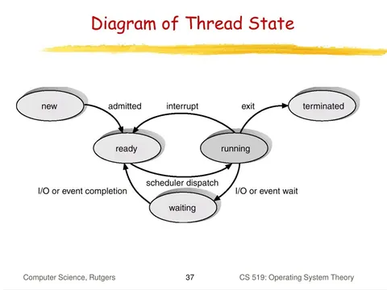
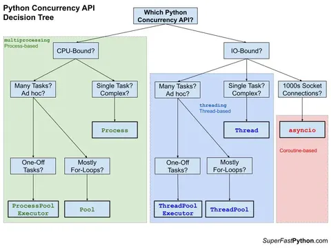
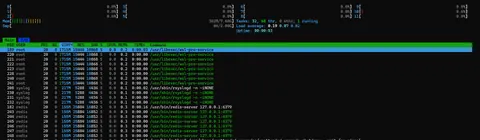
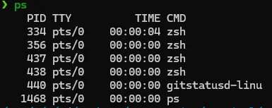
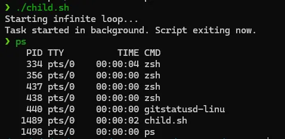
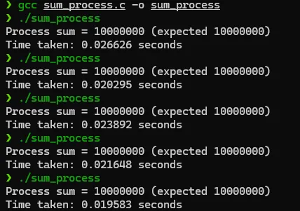
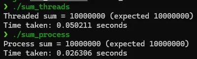

Process Synchronization in Linux
Explore how Linux processes and threads enhance multitasking in computing, leveraging CPU cores efficiently for seamless background operations
By Sukalyan RoyPublished Updated 7 min read

Part 1: The basics #
Have you ever wondered how your computer or phone makes so many different apps work simultaneously? Or how you can have things running in the background doing their work, while you’re watching netflix in the foreground?
These Background “Processes” are a very common way to achieve multitasking.
For this post, let’s begin by learning about certain terms in broader lingo, and then drill down on them to learn more about the internals of how your operating system and the programming languages on top of it, use these ideas to make everything seamless for us.
TL;DR #
-
Process synchronization is about stopping concurrent programs from corrupting shared state.
-
The core problem is the race condition: output depends on timing instead of logic.
-
Locks, semaphores, and other primitives are ways to control access to critical sections.
-
The hard part is balancing correctness with deadlocks, waiting, and performance.
Learning status
This post is part operating-systems note, part Linux learning log. The goal is to connect textbook synchronization ideas with what actually happens when processes run together.
What are processes? #
Everything that you run in your devices, can be run in many ways. One at a time, several at a time, waiting for the CPU to process stuff, or waiting for some input from your end.
Regardless of the way in which the hardware chooses to do so, the apps themselves are called processes when they are running.
Each app can have one process, like when we run some simple python programs or start a text editor etc.
They can also have multiple processes, one example for that could be Firefox.
If you open your task manager, you’ll see a processes tab. It’s highly likely that if you have multiple tabs open in Firefox, you’ll see several entries in that tab called firefox, each with a different CPU and memory usage. Even within them, for really complex pages, the firefox entry has a little toggle beside it, that leads to several sub processes under it.
When we have CPU intensive stuff, we use multiple processes, divided up between multiple physical cores of the CPU Hardware.
Now comes the fun part, these processes themselves are not the smallest unit of work. They can be further divided into something called Threads.
What are Threads? #
Each process can be further divided into one or more threads, with the fundamental difference being that, Each process has it’s separate collection of hardware and software resources, but all threads under a process share the same stuff.
When we have different kinds of tasks, where they are IO Bound(Bottlenecked by slow IO) then we use Threads. When one IO bound thread is stuck at waiting, the CPU can process some other thread which has got the response it was waiting for.

The above diagram illustrates all the different states a thread can be in.
Which one to use? #
The following diagram is taken from a python website but the main ideas hold true for processes and threads in any language. Here is a rough idea of how you make the decision of which one to use:

A minimal example in the terminal #
Before we proceed, I shall assume that you have very basic familiarity with the bash shell, and terminal stuff in general, as it’s easiest to study OS internals with Linux.
For a refresher you can check out my earlier post on it, we’ll pick up from where it left and try out some examples here.
In Linux, the terminology is as follows:
We have the init process which is the source of everything. it starts when the kernel starts.
With that as the Parent, every other process is created as it’s child at first, and then the other processes are the children of those processes and so on.
This creation of a process from another process is called Forking. We fork a parent to create a Child Process, where the child can act as the parent of some other processes and so on.
Each process has it’s PID or it’s process ID, and it also has a PPID or the Parent Process ID. These two are enough for us to track them, in tools such has top or htop, which is the task manager tool for linux terminals
| Concept | Meaning | Failure it prevents |
|---|---|---|
| Critical section | Code that touches shared state | Two processes changing the same thing at once |
| Mutex / lock | Allows one actor in at a time | Race conditions |
| Semaphore | Controls access with a counter | Overuse of limited resources |
| Deadlock | Everyone waits forever | Bad lock ordering or circular waiting |

For our minimal example, let’s use a shell script to find the PID and PPID of the shell itself, and then create a child process and check it’s IDs too.
#!/bin/bash
echo "Starting infinite loop..."
./loop.sh & # Run in background
echo "Task started in background. Script exiting now."This will create a child process that runs in the background, then we can check the before and after of all the running processes to get the pid and ppid.
The code inside loop.sh is:
#!/bin/bash
i=1
while [[ $i -ge 0 ]] ; do
(( i += 1 ))
doneThis is a simple infinite loop that will just keep running.
Before running the script, the processes are:

After running the script:

Also see the PPID of this is the same as the PID of the shell itself(333):
We can now check it inside htop:
Notice that only one core is engaged with this process, this is just as we discussed before, per process we can use only one core. For true multiprocessing, we separate the task into multiple processes and assign each to a different core.
Here you can also see the resources used by everything.
Now that was all for processes, we can use these as and when we need, with lots of library support across languages for achieving multiprocessing. Just to recall, this is useful when the problem at hand is CPU intensive.
Part 2: Coding it up #
Even though it is technically possible to do multi-threading in bash as well, it needs several specific linux utilities that make it too complicated for a first explanation. Most of the thread level logic is done in a programming language, whether it be C that is the language Linux is written on, or any other programming language interacting with the Linux Kernel using System Calls( this is a different topic altogether that deserves it’s own post)
Let’s take the simplest possible example of summing up numbers and see how it works. Fair warning, the upcoming code is a little bit tricky to understand if you haven’t worked with these constructs before, but this was the only way to show this in action:
The program divides up the work between several processes and then for each, writes it to a buffer.
At the very end, everything is read from the buffer and added up for one last time.
// sum_processes.c <- This uses multi processing using forks and child processes
#include <errno.h>
#include <stdint.h>
#include <stdio.h>
#include <stdlib.h>
#include <sys/wait.h>
#include <time.h>
#include <unistd.h>
#define ARRAY_SIZE 10000000
#define N_WORKERS 4
static int write_all(int fd, const void *buf, size_t n) {
const uint8_t *p = (const uint8_t *)buf;
while (n > 0) {
ssize_t w = write(fd, p, n);
if (w < 0) {
if (errno == EINTR)
continue;
return -1;
}
p += (size_t)w;
n -= (size_t)w;
}
return 0;
}
static int read_all(int fd, void *buf, size_t n) {
uint8_t *p = (uint8_t *)buf;
while (n > 0) {
ssize_t r = read(fd, p, n);
if (r < 0) {
if (errno == EINTR)
continue;
return -1;
}
if (r == 0)
return -1; // unexpected EOF
p += (size_t)r;
n -= (size_t)r;
}
return 0;
}
int main(void) {
clock_t startT, endT;
startT = clock(); // Start counting time
int *arr = malloc(sizeof(int) * ARRAY_SIZE);
if (!arr) {
perror("malloc");
return 1;
}
for (size_t i = 0; i < ARRAY_SIZE; i++)
arr[i] = 1;
int pipes[N_WORKERS][2];
for (int w = 0; w < N_WORKERS; w++) {
if (pipe(pipes[w]) != 0) {
perror("pipe");
free(arr);
return 1;
}
}
size_t chunk = ARRAY_SIZE / N_WORKERS;
size_t rem = ARRAY_SIZE % N_WORKERS;
// divide up the number of processes based on available number of workers
size_t start = 0;
for (int w = 0; w < N_WORKERS; w++) {
size_t end = start + chunk + (w < (int)rem ? 1 : 0);
pid_t pid = fork();
if (pid < 0) {
perror("fork");
free(arr);
return 1;
}
if (pid == 0) {
// Child: close read end, compute sum, write it, exit
close(pipes[w][0]);
long long s = 0;
for (size_t i = start; i < end; i++)
s += arr[i];
if (write_all(pipes[w][1], &s, sizeof(s)) != 0) {
perror("write");
_exit(2);
}
close(pipes[w][1]);
_exit(0);
}
// Parent: close write end (for this worker), continue to next fork
close(pipes[w][1]);
start = end;
}
// Parent: collect results
long long total = 0;
for (int w = 0; w < N_WORKERS; w++) {
long long part = 0;
if (read_all(pipes[w][0], &part, sizeof(part)) != 0) {
perror("read");
// continue anyway
}
close(pipes[w][0]);
total += part;
}
// Reap children
for (int w = 0; w < N_WORKERS; w++) {
int status = 0;
wait(&status);
}
printf("Process sum = %lld (expected %lld)\n", total, (long long)ARRAY_SIZE);
endT = clock(); // End timing
double time_taken =
((double)(endT - startT)) / CLOCKS_PER_SEC; // Calculate time in seconds
printf("Time taken: %f seconds\n", time_taken);
free(arr);
return 0;
}And the performance of this is:

Now to solve this using multithreading, we would have to use the pthread :
// sum_threads.c
#include <pthread.h>
#include <stdint.h>
#include <stdio.h>
#include <stdlib.h>
#include <time.h>
#define ARRAY_SIZE 10000000
#define N_WORKERS 4
typedef struct {
const int *arr;
size_t start;
size_t end;
long long *partials;
int worker_id;
} Task;
static void* worker_sum(void *arg) {
Task *t = (Task*)arg;
long long s = 0;
for (size_t i = t->start; i < t->end; i++) s += t->arr[i];
t->partials[t->worker_id] = s;
return NULL;
}
int main(void) {
clock_t startT, endT;
startT = clock(); // Start timing
int *arr = malloc(sizeof(int) * ARRAY_SIZE);
if (!arr) { perror("malloc"); return 1; }
for (size_t i = 0; i < ARRAY_SIZE; i++) arr[i] = 1; // easy to verify
pthread_t threads[N_WORKERS];
Task tasks[N_WORKERS];
long long partials[N_WORKERS];
size_t chunk = ARRAY_SIZE / N_WORKERS;
size_t rem = ARRAY_SIZE % N_WORKERS;
size_t start = 0;
for (int w = 0; w < N_WORKERS; w++) {
size_t end = start + chunk + (w < (int)rem ? 1 : 0);
tasks[w] = (Task){
.arr = arr, .start = start, .end = end,
.partials = partials, .worker_id = w
};
if (pthread_create(&threads[w], NULL, worker_sum, &tasks[w]) != 0) {
perror("pthread_create");
free(arr);
return 1;
}
start = end;
}
for (int w = 0; w < N_WORKERS; w++) pthread_join(threads[w], NULL);
long long total = 0;
for (int w = 0; w < N_WORKERS; w++) total += partials[w];
printf("Threaded sum = %lld (expected %lld)\n", total, (long long)ARRAY_SIZE);
free(arr);
endT = clock(); // End timing
double time_taken = ((double)(endT - startT)) / CLOCKS_PER_SEC; // Calculate time in seconds
printf("Time taken: %f seconds\n", time_taken);
return 0;
}And the performance is as follows:

When we compare the two, we see that the multiprocessing is faster than multithreading, but these differences wont be more clear until we tackle a really large problem with it. (More on it in a different post)
(PS: AI help was taken to write these code snippets, as im learning these things myself while writing this)
Now for some important notes:
Note: There is a difference between concurrency and parallelism. Parallelism allows multiple tasks to execute at the same time, whereas concurrency allows multiple tasks to execute one at a time in an interleaving manner.
Note: Due to Python Global Interpreter Lock (GIL), only one thread can be executed at a time. Therefore, multithreading only achieves concurrency and not parallelism for IO-bound processes. On the other hand, multiprocessing achieves parallelism.
Note that using multithreading for CPU-bound processes might slow down performance due to competing resources that ensure only one thread can execute at a time, and overhead is incurred in dealing with multiple threads.
On the other hand, multiprocessing can be used for IO-bound processes. However, the overhead for managing multiple processes is higher than managing multiple threads as illustrated above. You may notice that multiprocessing might lead to higher CPU utilization due to multiple CPU cores being used by the program, which is expected.
The above notes are taken from here, because they succinctly explain the points, rather than me writing several more paragraphs
What’s next? #
So far we have covered the basics, and set up some background for other Kernel stuff that deserve their own posts, for example System calls.
There are also several libraries to learn when you’re going beyond the extreme low level C and start working on real projects.
For the next post on this topic, I plan on creating something that’s not a toy example, something that can be actually used. It won’t be in C most likely, but in some other language like Python or Rust.
Would love any suggestions regarding what to make.
Until then, stay tuned!